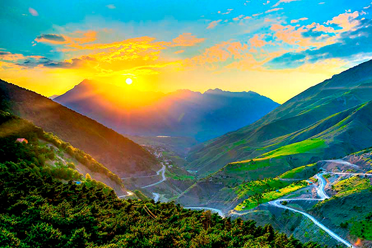

Горы

Гора́ (мн. ч. — го́ры) — форма рельефа, изолированное резкое поднятие местности с выраженными склонами и подножием или вершина в горной стране.
По характеру вершины выделяют пикообразные, куполообразные, платообразные и другие горы. Вершины подводных гор могут представлять собой острова.По происхождению говорят о тектоноденудационных горах и вулканических.